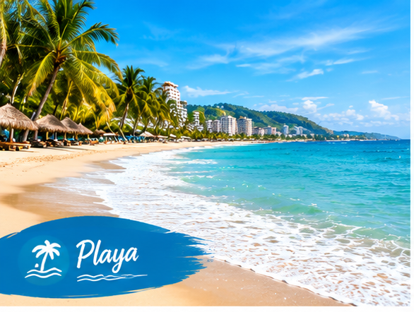
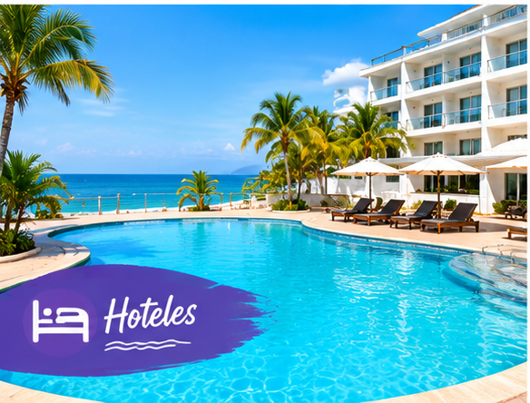
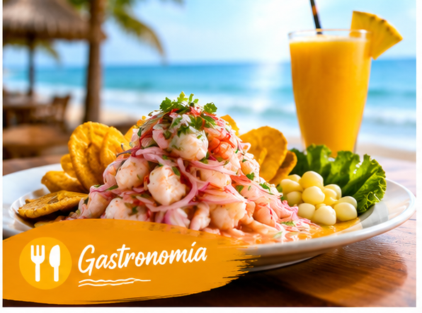
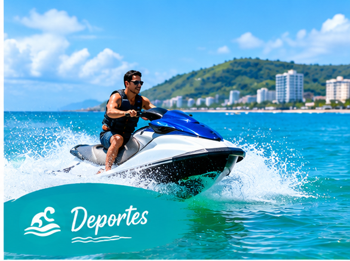
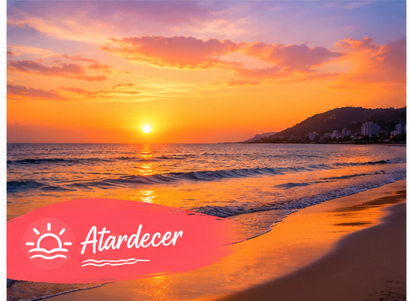
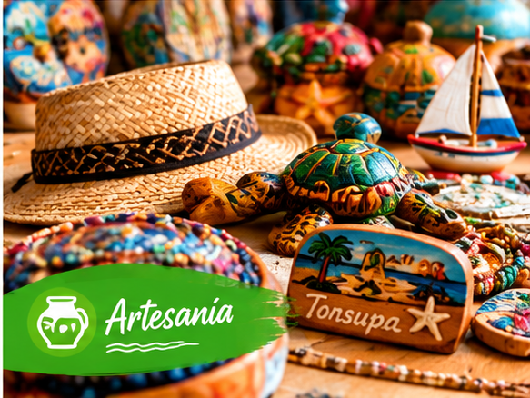

1. Playa de Tonsupa
Extenso litoral con oleaje moderado, ideal para relajación, natación y fotografía de atardeceres.

Extenso litoral con oleaje moderado, ideal para relajación, natación y fotografía de atardeceres.

Infraestructura moderna con edificios departamentales, piscinas y zonas de spa a pasos del mar.

Cabañas playeras donde se preparan encocados, ceviches picados al instante y batidos tropicales.

Punto de alquiler autorizado para banana boat, jet skis y paseos en lancha costera.

Punto costero privilegiado para observar la caída del sol sobre el Océano Pacífico.

Mercado artesanal local con productos elaborados en concha, madera balsa, coco y bisutería.